ただし、「0円＝お金がかからない」ではありません。
必要な自己資金、毎月の費用、1棟目に残る利益まで、このページで先に全部お見せします。納得できた方だけ、資料をご請求ください。
※ 収益・期間の数値はいずれも一定の前提を置いたモデルケースです。実際の結果を保証するものではありません。
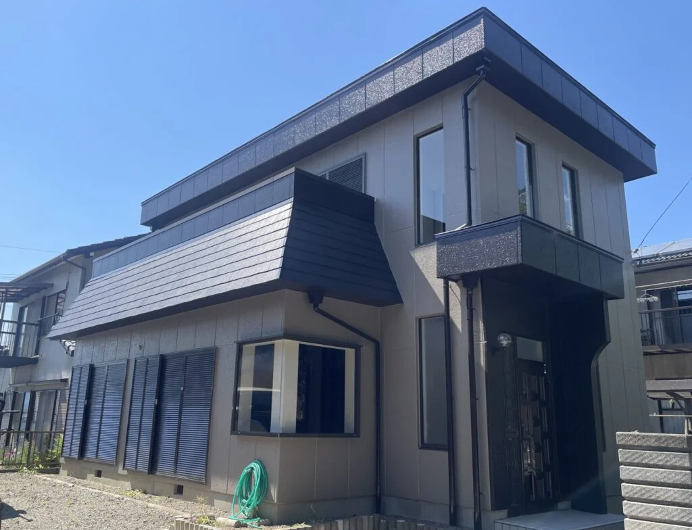
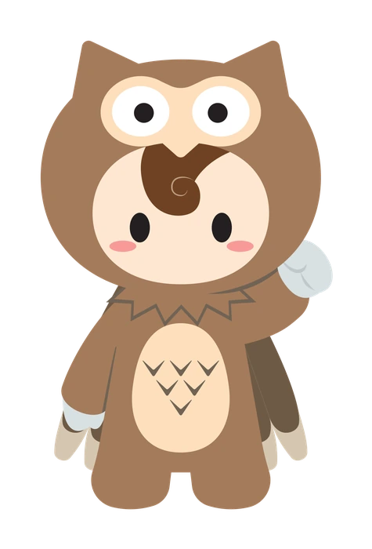
商談でいちばん多いご質問が「0円って、結局いくらかかるの？」です。先にお答えします。
一般的なフランチャイズの加盟金は200万〜500万円。OWLの0円プランは、まとまった加盟金を用意しなくて始められます。
契約から36ヶ月、毎月の固定額です。売上に応じたロイヤリティはありません。開業前の準備期間中も発生します（ここが「0円」の勘違いが起きやすいところです）。
物件の取得・改装・開業当初の運転資金はご自身の資金で立て替えます。融資は行政の指定を受けたあとに実行されるためです。規模・地域で変動します。
| 0円プラン | 加盟金プラン | |
|---|---|---|
| 加盟金 | 0円 | 440万円半金払いのご相談も可 |
| 月額 サポート費 | 16.5万円 × 36ヶ月開業前の準備期間中も発生 | 4.4万円 / 月 |
| 売上 ロイヤリティ | なし | なし |
| 3年間の 支払い総額 | 約594万円＋開業前の月額分 | 約598万円 |
| 向いている方 | 手元の資金を物件・内装・運転資金に集中させたい方 | 加盟金を用意でき、月々の固定費を軽くしたい方 |
※ 金額は税込の目安です。3年総額は「0円プラン＝加盟金がない代わりに、月々が大きい」「加盟金プラン＝先に払う代わりに、月々が軽い」という構造の比較で、総額ではほぼ同じ、開業前の準備期間分だけ0円プランがやや多くなります。ご自身の資金状況に合うほうを、個別相談で一緒に選びます。
開設費（物件・改装）と、入居が埋まるまでの運転資金は、いったんご自身の資金で立て替える必要があります。金融機関の融資は行政の指定を受けてから実行されるためです。融資に向けた事業計画書の作成と面談同行はOWLが支援しますが、融資の可否は金融機関の審査によります。
「1棟でしっかり儲かる」事業ではありません。2棟目から経営が安定する事業です。ここを最初にお伝えします。
人件費と家賃で大半が消えます。地域の加算（東京都など）で上下します。開業直後は赤字の月もあります。
管理者・サビ管を2棟で共有できるため、2棟目から利益が出る構造です。多くのオーナー様がここを最初の目標にします。
事業ガイドの収支モデル（サポート費控除前）。ここまで来ると、オーナー様が現場に張り付かない運営が現実的になります。
| 福祉サービス費（給付費） | ¥2,940,194 /月 |
|---|---|
| 支出（人件費・家賃・水道光熱費ほか） | −¥2,337,847 /月 |
| 営業利益（サポート費控除前） | ¥602,347 /月 |
※ 2棟・8居室／稼働が安定した状態を前提としたモデルケースです（事業ガイドvol.19の数値・本部サポート費は差し引かれていません）。地域・物件条件・人員配置により変動し、実際の収益を保証するものではありません。開業直後は稼働が上がりきらず、1棟目は月数万円にとどまることが一般的です。
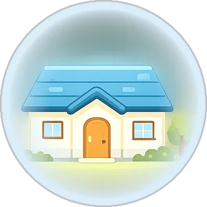
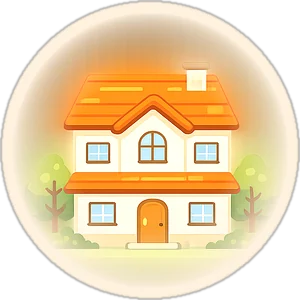
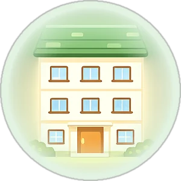
※ 稼働が安定した状態を前提としたモデルケースです。地域・物件条件により変動します。売上の大半は国・自治体からの給付費で、個人のお客様からの売掛金と違い未回収のリスクが小さいのが特徴です。くわしい収支計画は、無料の資料または個別相談でお渡しします。
実際にご契約・開業に至った方の共通点と、商談の途中で「今は時期ではない」となったケースです。ご自身に近いほうをご確認ください。
△に当たる方も、お問い合わせは歓迎です。いま何を整えれば開業できるかを具体的にお伝えします（しつこい営業はしません）。
大きな施設を建てる必要はありません。地域にある戸建てやアパートを活かして開業できます。
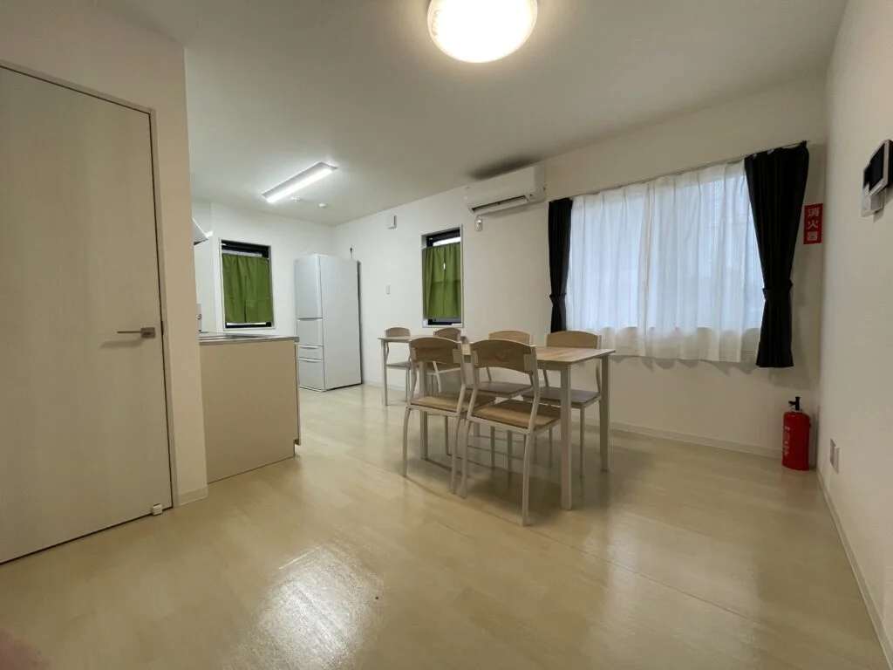
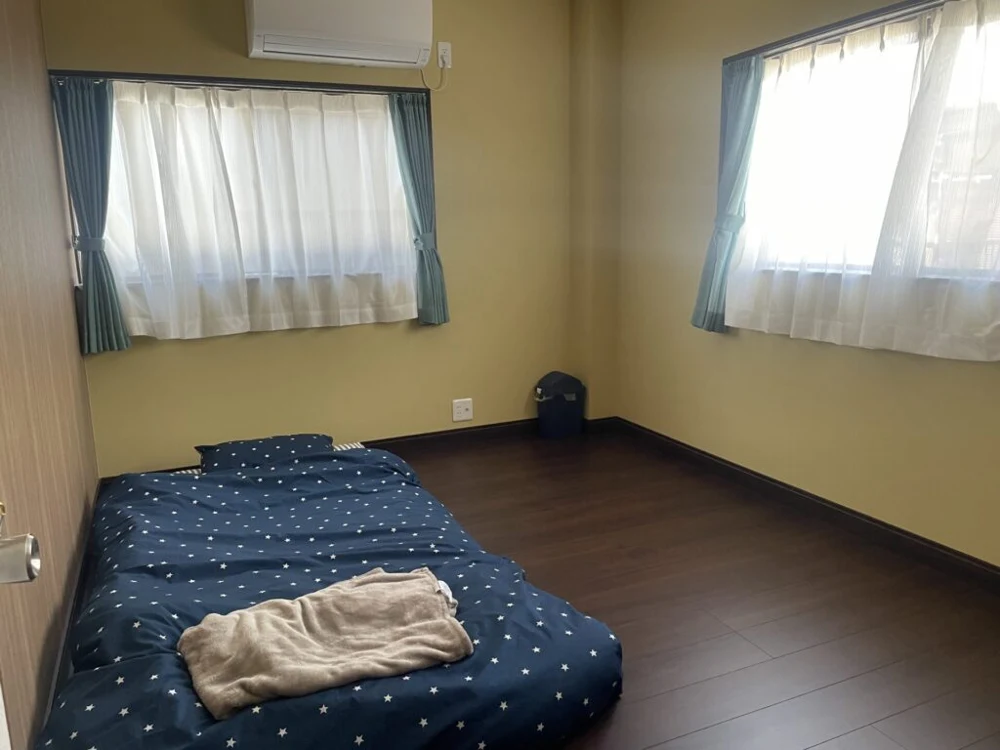
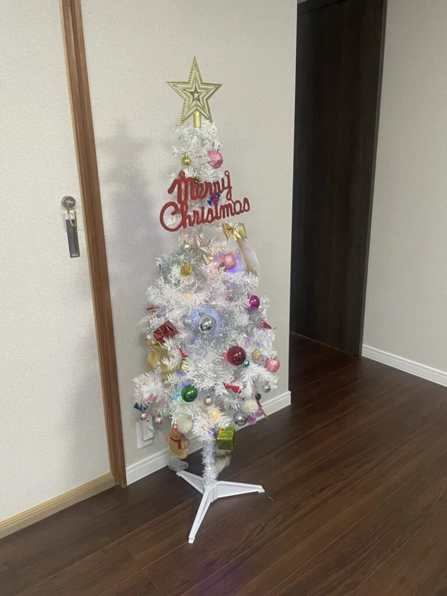
※ 写真はすべて、実際に運営中の施設の実写真です（三重県四日市市・掲載許諾済み）。
どんな不安から始まり、どこでつまずき、どう乗り越えたか。2026年8月のインタビュー（動画）でご本人が話された内容です。お名前はイニシャル表記です。
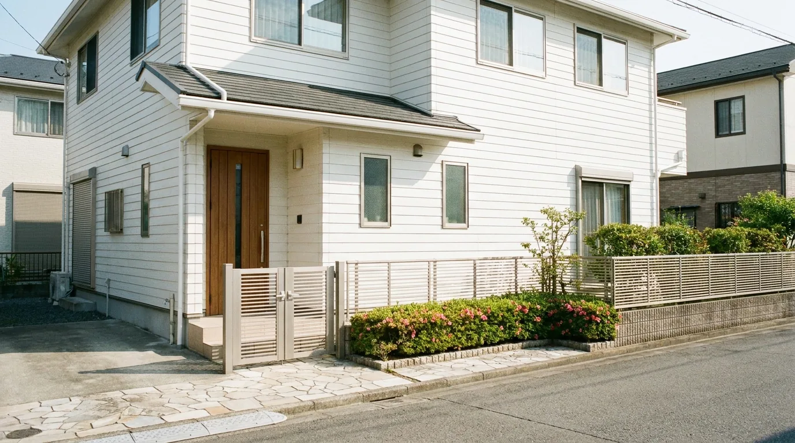
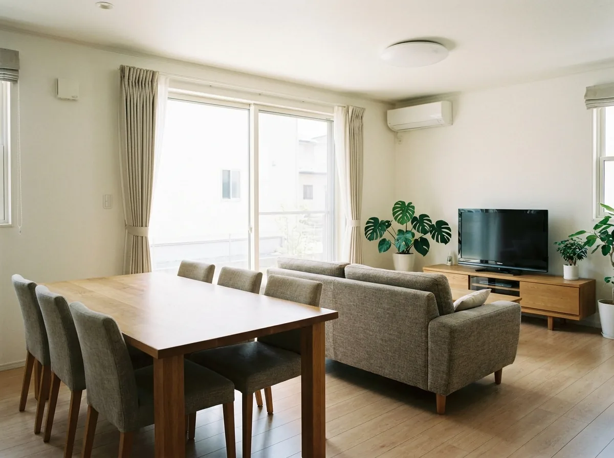
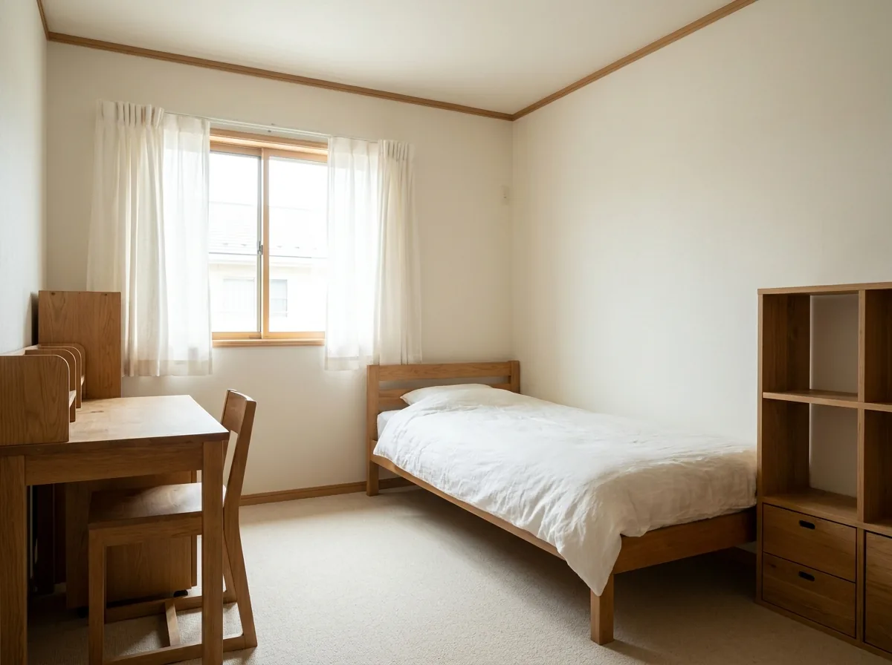
「やるって決めたらもう覚悟ですよ。やりきるっていう」— ご主人
「役所なんか特に全く右も左も分からなかったけれど、ほぼ全部お任せでやっていただきました」— 奥様
※ 2026年8月30日のインタビューでご本人が話された内容にもとづきます。物件写真はイメージで、この事業所のものではありません。動画本編の掲載可否は別途最終確認。
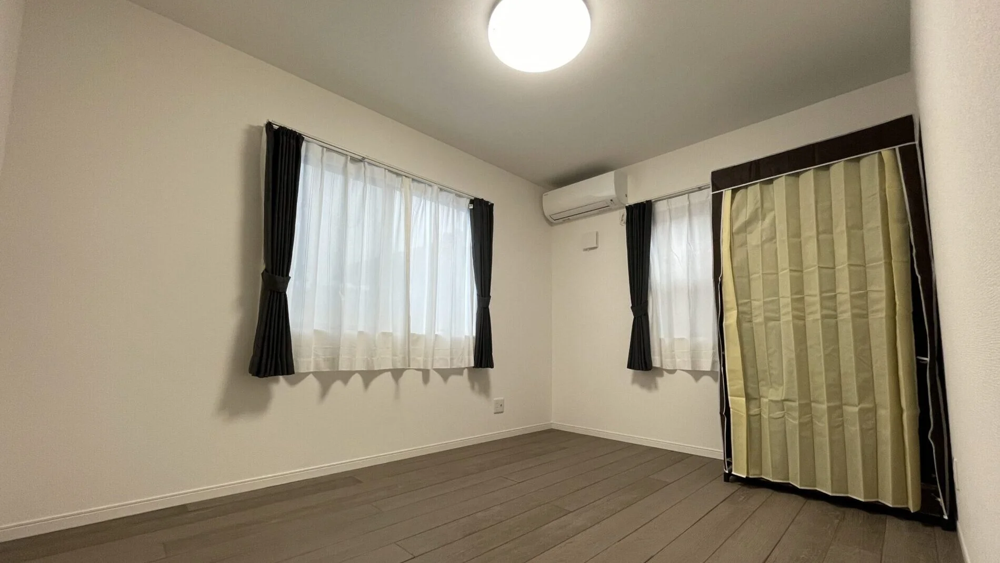
「不安しかなかった。融資のお金が水のように流れていく」— 2棟目の2人目が決まらなかった半年について
「1人専門家を雇っているような感覚でサポートしてもらえている。もしサポートがなかったら、多分続けるのは難しかった」
※ 2026年8月29〜30日のインタビューでご本人が話された内容にもとづきます。物件写真はご本人の運営施設の実写真（掲載許諾済み）。融資額・月商・自己資金は取材時のヒアリングによるもので、金額・期間は取材時点のものです。動画本編の掲載可否は別途最終確認。
開業・経営されたオーナー様の言葉です。
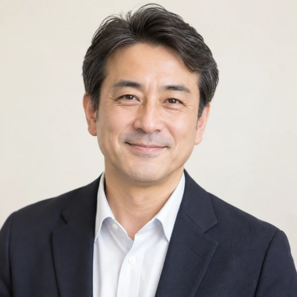
「見に行って現場を見せていただいて、直にお話も聞けたことで、ちょっと安心ができた。最初は特に不安が大きかったですけど、今になればなんとかなるんだなと。」
▲ くわしい経緯は、上の事例①をご覧ください
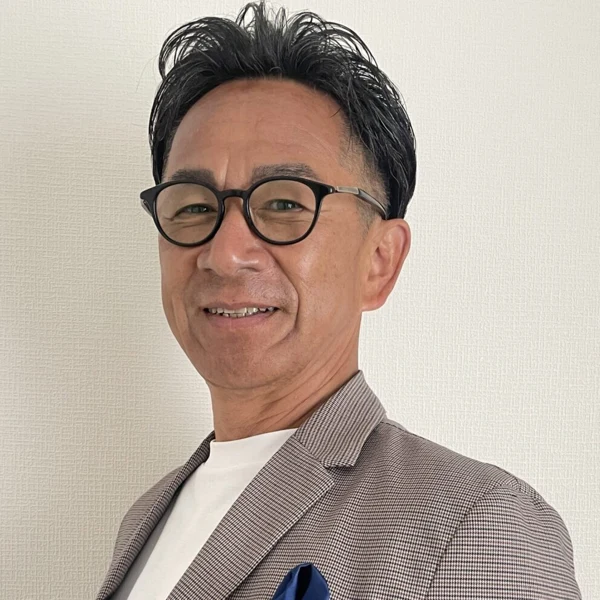
「何も分からないものを自分たちだけでやろうと思ったら無理。分からないことは全部聞いて、助言もいっぱいもらえた。『Yさんのところに入ってもらえて本当に良かった』と相談員さんや就労先から言っていただけています。」
▲ くわしい経緯は、上の事例②をご覧ください
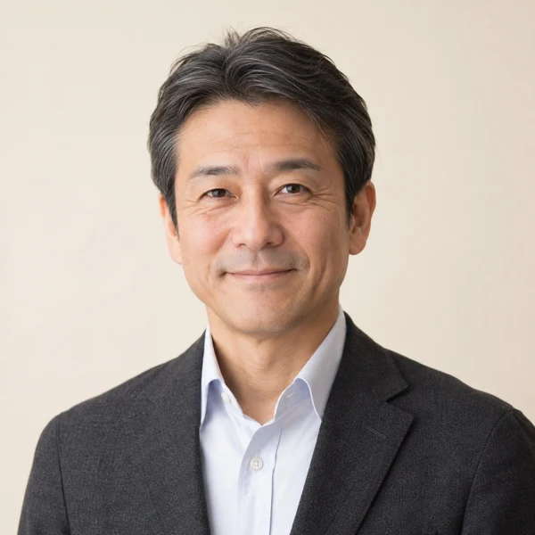
「コロナ禍に打撃を受けた中、OWLと出会い開業。60居室を超える事業所を開設し、地域では一番大きな信頼を得ています。」
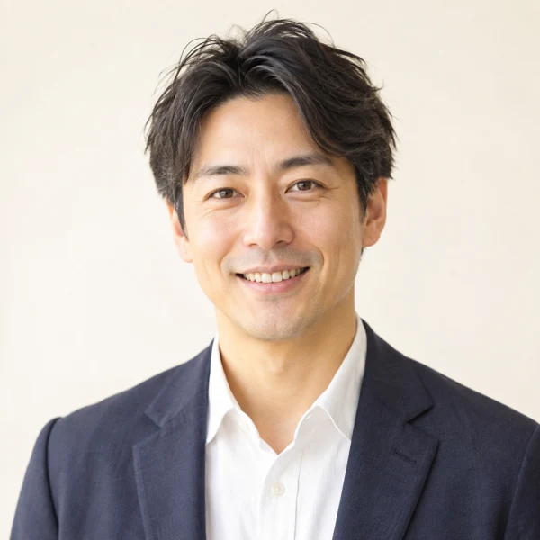
「不動産業から参入。未経験でしたが、今では行政担当者と対等に話せる自分に成長しました（笑）」
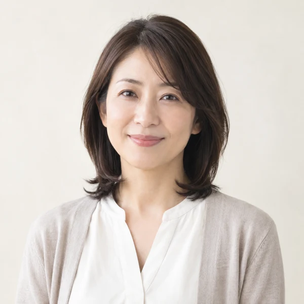
「介護事業の壁にぶつかった時、OWLに出会えた。何回聞いても丁寧に伝えてくれて頼りに。」
※ 顔写真について：三重県オーナー様はご本人の実写真（掲載許諾済み）。愛知県・大阪府・千葉県・福島県の4名はAIで生成したイメージ写真で、ご本人の実際のお顔ではありません。加盟オーナー様は全国180社、福祉未経験からのスタートが約6割です。
パンフレットの支援メニューではなく、実際にオーナー様が「これで決めた」と話されたものだけを載せています。
契約前に、実際に運営している加盟店の現場をご案内します。運営中のオーナー様から、良いことも大変なことも直接聞けます。
「見に行って現場を見せていただいて、直にお話も聞けたことで安心ができた」— 愛知・S様ご夫妻
地域別の収支計画をもとに事業計画書を一緒に作り、金融機関の面談には担当が同席します。
「採用試験の面接ぐらい緊張しながら行ったけど、心強いサポートがあったので安心して臨めた」— 三重・Y様
「2人目が半年決まらない」は誰にでも起こります。訪問先の助言、営業先リスト、見学会の企画で、入居が埋まるまで伴走します。
「運営指導は細かいところ1〜2箇所だけで、重たい指摘もなくすんなり終わった」— 三重・Y様
お問い合わせから開業まで、おおむね4〜6ヶ月が目安です。「いつ、どのお金が必要か」もあわせて載せています。
まずは資料をご覧ください。オンラインの説明会でも事業の全体像をご説明します。無理な勧誘はいたしません。
ご希望の地域・規模・ご予算をうかがい、その地域の収支計画をお渡しします。自己資金・希望エリアの規制・在職中かどうかを最初に確認し、今進めるべきかを率直にお伝えします。
運営中の加盟店をご案内します。ご契約前です。ここで「自分にできそうか」を判断してください。
契約書を読み合わせてからご契約。0円プランはこの月から月額サポート費が発生します（加盟金プランは加盟金のお支払い）。
地域のニーズを調査し、指定基準を満たす物件をお探しします。自治体ごとに運用が違うため、事前相談には担当が同席します。
事業計画書の作成と金融機関面談の同行。消防・建築基準を満たす必要最小限の改修と、管理者・サビ管・世話人の採用を支援します。※ 融資の可否は金融機関の審査によります。
共同生活援助の指定申請書類を作成・提出。指定を受けたあとに融資が実行され、立て替えた資金が戻る流れです。
訪問先の助言・営業先リストで入居が埋まるまで伴走。1棟目が安定したら、2棟目の計画を一緒に立てます。
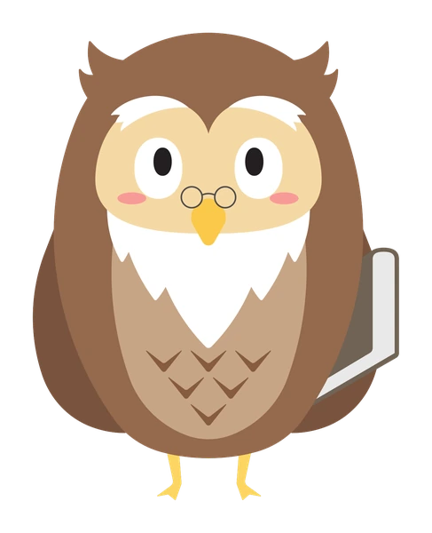
資料請求の前に、ここで確認できます。
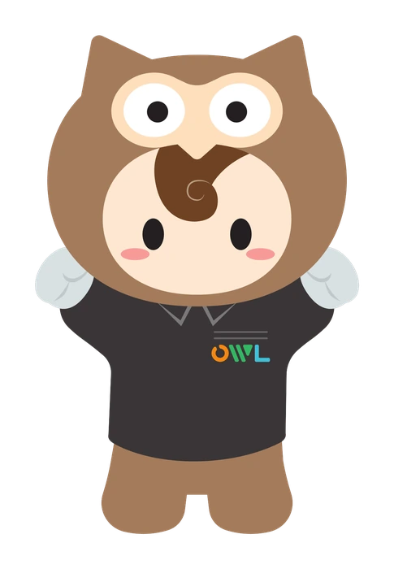
CONTACT資料請求は無料・約1分です。しつこい営業はいたしません。
「今は難しい」に当たる方も、いま何を整えればよいかをお伝えします。
1〜2営業日以内にご連絡します。ご状況に合った収支計画をお送りするため、3つだけ先に教えてください。